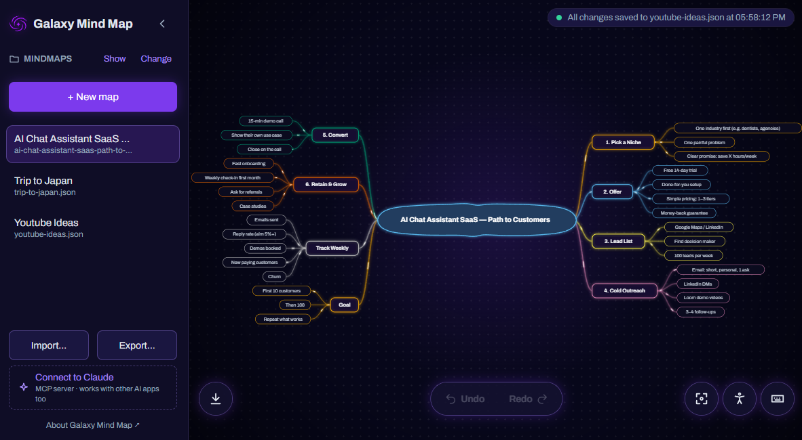
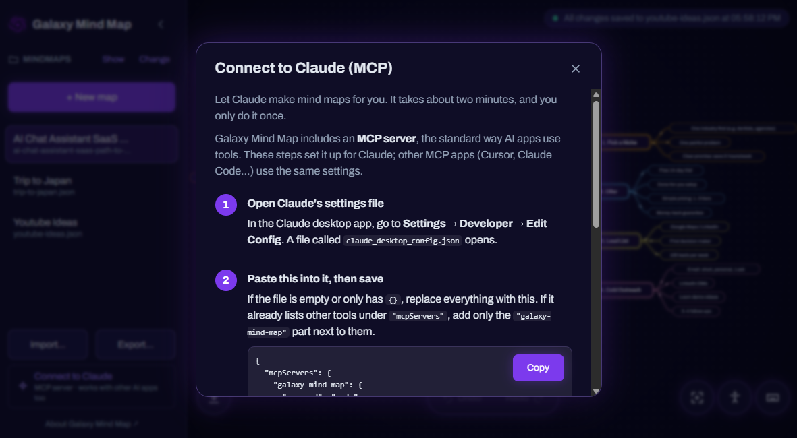
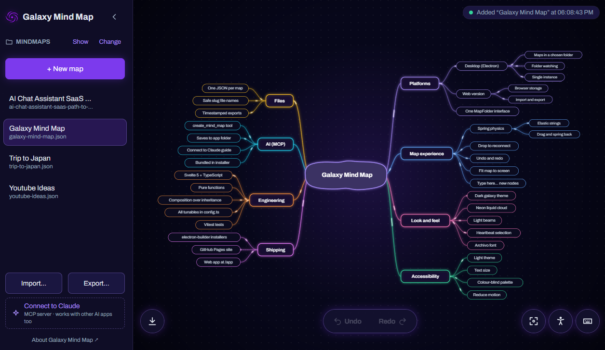

Made for thinking, not fiddling
-
Elastic connections
Strings stretch and spring back, so the map feels alive.
-
Drop to reconnect
Drag an idea onto another to move it, whole branch included.
-
Plain files
Every map is one readable .json file. Sync it, back it up.
-
Desktop or browser
A desktop app for your folders, or the browser, no install.
-
Undo anything
Every change can be undone, so experimenting is safe.
-
Comfortable for everyone
Light or dark, larger text, colour-blind safe, calm motion.
MCP server included
Let your AI draw the map
Galaxy Mind Map speaks MCP, the open standard AI apps use to work with tools. Ask Claude for a mind map of anything and it lands in your app, ready to explore and edit.
“Create me a mind map about planning a trip to Japan.”
- Connect with the two-minute guide inside the app.
- Ask Claude, Cursor or any MCP app for a map.
- Watch it appear, saved as a file of your own.

Map anything your AI can read
Point your AI at code, documents or a messy idea, and ask for a map. A few prompts to start with:
-
Your codebase
“Create me a mind map of this repository's architecture.”
-
A PDF or report
“Create me a mind map of the key ideas in this PDF.”
-
A project plan
“Create me a mind map to plan my app's launch.”
-
A rough draft
“Create me a mind map of my essay draft's structure.”
-
Meeting notes
“Create me a mind map of the decisions and actions in these notes.”
-
A new subject
“Create me a mind map of what to learn about astronomy.”

Create me a mind map of the codebase we're working on.
Three keys are all you need
- TabAdd an idea
- F2Rename it
- Ctrl ZChange your mind
Your thoughts, your files
No account and no cloud. On the desktop, maps live in a folder you choose. In the browser, they stay on your device, ready to export.
Start a map